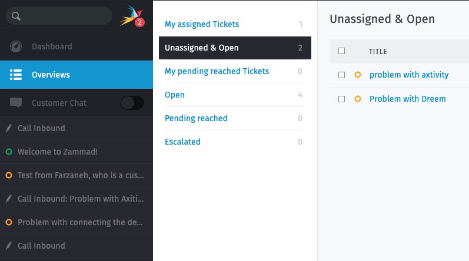
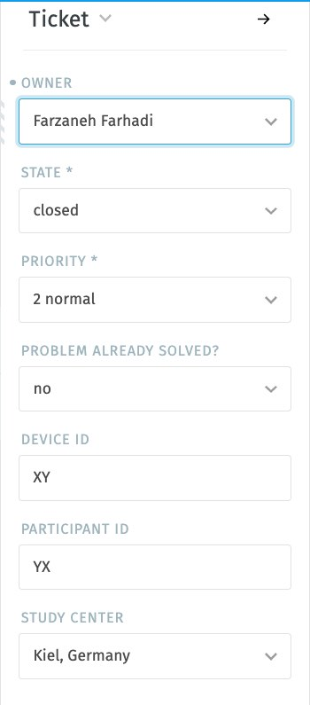
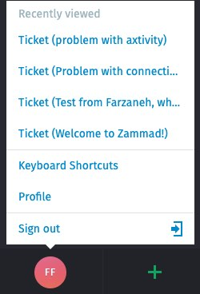
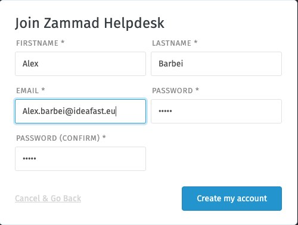
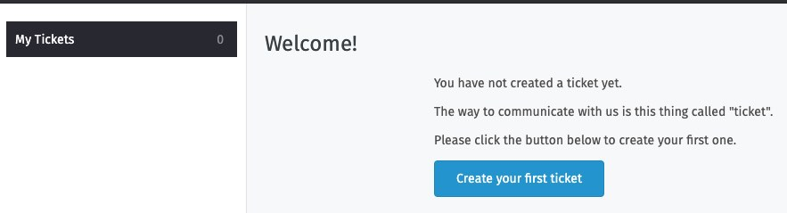
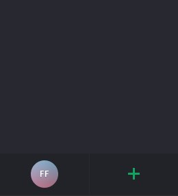
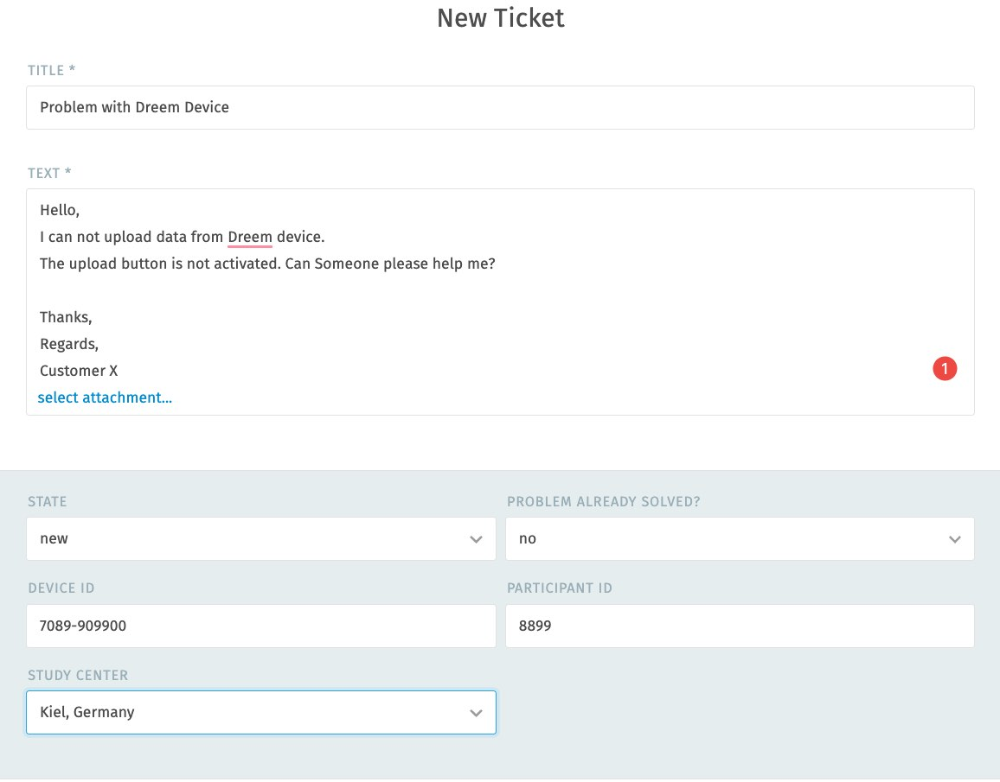
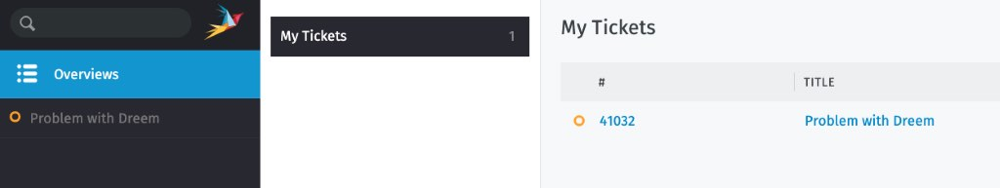

Support Desk (support.ideafast.eu)
General Overview
Welcome to IDEA-FAST Support!
The IDEA-FAST support website is an open source web-based ticketing system for customer support that has 3 different types of user:
- Admin: the person who configures the system.
- Agent: People who work on Tickets.
- Customer: People who create Tickets and ask for help.
These are current users:
- Admin: Jan Smeddinck, Farzaneh Farhadi, Jay Rainey
- Agent: Ridita Ali, Farzaneh Farhadi, Jay Rainey, Drew Miley
- Customer: Register as a new customer
Agent Instruction
An agent has been already registered in the system. If you are a new user and would like to register as an Agent, please email: support@ideafast.eu
To login, view, and reply to the tickets:
- Login to the system with your email address and password
- Click at the “Overviews” and choose “Unassigned & Open”

- Choose the ticket which is relevant for you and has been created recently by one of the customers.
- When you assign a ticket the_owner_,state and_priority_options should be selected. An overview of each of those options is outlined below:
Owner: The name of the person who will be assigned the ticket
Priority:The importance of completing this ticket are split into three:
- Low
- Normal
- High
State:The status of the ticket, which should be updated as you respond and resolve the ticket.
- New: By default, the customer still hasn’t received her first response on the issue.
- Open: the customer has received an initial response, but the issue still hasn’t been resolved.
- Close: When the ticket is sorted.
- Pending close: (i.e., scheduled to automatically close at a later date)
- Pending reminder: (i.e., hidden, but scheduled to reappear at a later date)
These options have been filled by a customer “Problem Already Solved?”, “Device ID”, “Participant ID”, “Study Center”. An overview of each of those options is outlined below:
-
“Problem Already Solved?”:Customer should always create a ticket when they see a problem.
- No:By default: if the problem is not solved yet and customer need support about it.
- Yes: If there was a problem, it has been already solved without asking any support and there is no ticket about it.
- “Device ID”:The device id from the device.
- “Participant ID”:Each participate has an Id.
- “Study Center”:The study center belongs to the customer.

- Click on reply, please reply to the customer with a description as you wish and press the update button.
- Please be sure, you do a follow up in the ticket as you are responsible for tickets assigned to your name.
- When you sort the ticket and all the problems has been replied, please change the state to “closed” and press update button.
- Sign out

Customer Instruction
The idea-fast support website will enable you to report any issues experienced with the devices used as part of the idea-fast study. You will need to create an account with our platform:
Account Registration
- Open support desk webpage on your browser by clicking on: https://support.ideafast.eu/#signup
- please enter your first and last name and your work email address and press “Create my account”.

- You will then be logged into the idea-fast support website and a welcome screen will be presented.

- You will also receive an email to confirm your email address titled “Confirm your Zammad Helpdesk account”
- Click on the link inside the email to complete your registration.
- Congratulations, your account is ready!
Creating a ticket on the IDEA-FAST Support website:
- Click on “+” Green Button on down the left side of the screen.

- “New Ticket” screen is open.

- Please enter the “title” and the “description” of your ticket with the question that you have. The_Title_should identify the device used and briefly describe the challenge experienced. The description should provide details on the problem experienced.
- You can also attach a file (photo, video, or document) by clicking on “select attachment…”.
- When you create a ticket the state, Device ID, Participant ID and Study Centeroptions should be entered. An overview of each of those options is outlined below:
- “State”:Keep the state as “new” if that is a new ticket.
-
“Problem Already Solved?”:You should create a ticket when you see a problem.
- No:By default: if the problem is not solved yet and you need help about it.
- Yes: If there was a problem, it has been already solved without asking any support and there is no ticket about it.
- “Device ID”:Pick the device id from the device.
- “Participant ID”:Each participate has an Id.
- “Study Center”:Please select the study center that is belonged to you.
- Press “Create” button and your ticket will be sent to our support team
- You will receive an email about your inquiry, including updates once Agents respond.
- You can click on Overview to see list of all your tickets.

Creating a Ticket with Email
- You can send an email to support@ideafast.eu and a ticket in our support system will automatically be created.
- You will then receive an email about your inquiry.
- With your registered account, you can check the status of this ticket in the support website.
Password Change
- Click on: https://support.ideafast.eu/#password_reset
- Enter your email address which is also your username
- You will receive an email with “password change” instruction